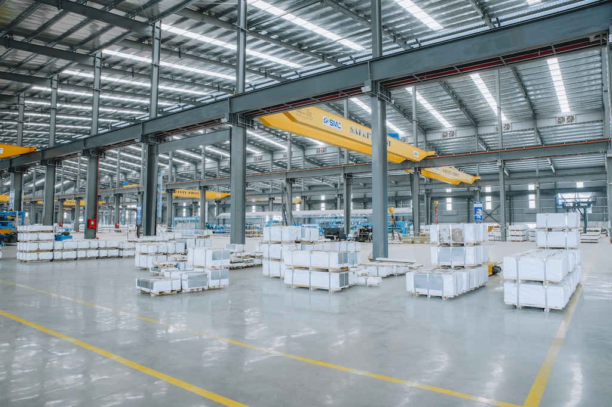

SMC Phu My Coil Center
SMC Phu My Coil Center là một phần quan trọng trong chuỗi cung ứng của SMC Group, chuyên cung cấp các loại thép cuộn và tấm chất lượng cao, đáp ứng nhu cầu đa dạng của thị trường.
Năng lực và Dịch vụ
Máy xẻ băng (Slitting Machine)
- Vật liệu: PO, CR, GI, GL, PP, EGI, ES.
- Độ dày: 0.25 ÷ 3.2 mm.
- Chiều rộng: 24 ÷ 1350 mm.
- Dung sai chiều rộng: +/-0.2 mm.
- Trọng lượng cuộn tối đa: 20 tấn.
- Đường kính trong: 508, 610 mm.
- Đường kính ngoài: Tối đa 1800 mm.
Máy cắt tấm (Shearing Machine)
- Vật liệu: PO, CR, GI, GL, PP, EGI.
- Độ dày: 0.3 ÷ 6.0 mm.
- Chiều rộng: 150 ÷ 1400 mm.
- Chiều dài tấm: Tối đa 6000 mm.
- Dung sai chiều dài: +/-0.5 mm.
- Trọng lượng cuộn tối đa: 15 tấn.
- Đường kính trong: 508, 610 mm.
- Đường kính ngoài: Tối đa 1800 mm.
Kho bãi và Logistics: Hệ thống kho bãi rộng lớn và quy trình logistics hiệu quả đảm bảo lưu trữ an toàn và giao hàng nhanh chóng.

Sản phẩm thép cung cấp
Chúng tôi cung cấp đa dạng các loại thép, bao gồm:
- Thép cán nóng (HRC)
- Thép cán nguội (CRC)
- Thép mạ kẽm (GI)
- Thép mạ hợp kim nhôm kẽm (GL)
- Thép mạ màu (PPGI/PPGL)
- Thép không gỉ (Inox)
- Các loại thép đặc biệt khác theo yêu cầu.
Nguồn nguyên liệu được nhập khẩu từ các nhà sản xuất thép hàng đầu thế giới như CSVC, POSCO, Nam Kim, Tôn Đông Á, Yiehphui, Nippon, JFE, v.v., đảm bảo chất lượng và độ tin cậy tuyệt đối.
Kiểm soát chất lượng
Chúng tôi áp dụng quy trình kiểm soát chất lượng nghiêm ngặt ở mọi giai đoạn, từ khâu tiếp nhận nguyên liệu đến thành phẩm cuối cùng, đảm bảo sản phẩm đến tay khách hàng đạt tiêu chuẩn cao nhất và độ chính xác tuyệt đối.
SMC Phu My Coil Center
SMC Phu My Coil Center is a crucial part of SMC Group's supply chain, specializing in providing high-quality steel coils and sheets to meet diverse market demands.
Capabilities and Services
Slitting Machine
- Material: PO, CR, GI, GL, PP, EGI, ES.
- Thickness: 0.25 ÷ 3.2 mm.
- Width: 24 ÷ 1350 mm.
- Width Tolerance: +/-0.2 mm.
- Max Coil Weight: 20 tons.
- Inner Diameter: 508, 610 mm.
- Outer Diameter: Max 1800 mm.
Shearing Machine
- Material: PO, CR, GI, GL, PP, EGI.
- Thickness: 0.3 ÷ 6.0 mm.
- Width: 150 ÷ 1400 mm.
- Sheet Length: Max 6000 mm.
- Length Tolerance: +/-0.5 mm.
- Max Coil Weight: 15 tons.
- Inner Diameter: 508, 610 mm.
- Outer Diameter: Max 1800 mm.
Warehousing and Logistics: Extensive warehousing system and efficient logistics processes ensure safe storage and fast delivery.
Steel Products Supplied
We supply a diverse range of steel types, including:
- Hot Rolled Coil (HRC)
- Cold Rolled Coil (CRC)
- Galvanized Iron (GI)
- Galvalume (GL)
- Pre-Painted Galvanized Iron/Galvalume (PPGI/PPGL)
- Stainless Steel (Inox)
- Other special steel types as per request.
Raw materials are imported from leading global steel manufacturers such as CSVC, POSCO, Nam Kim, Ton Dong A, Yiehphui, Nippon, JFE, etc., ensuring absolute quality and reliability.
Quality Control
We implement strict quality control processes at every stage, from raw material reception to final product, ensuring that products delivered to customers meet the highest standards and absolute precision.
SMC富美钢卷中心
SMC富美钢卷中心是SMC集团供应链的重要组成部分，专业提供高质量的钢卷和钢板，以满足多样化的市场需求。
能力与服务
分切机 (Slitting Machine)
- 材料: PO, CR, GI, GL, PP, EGI, ES.
- 厚度: 0.25 ÷ 3.2 mm.
- 宽度: 24 ÷ 1350 mm.
- 宽度公差: +/-0.2 mm.
- 最大卷重: 20 吨.
- 内径: 508, 610 mm.
- 外径: 最大 1800 mm.
剪切机 (Shearing Machine)
- 材料: PO, CR, GI, GL, PP, EGI.
- 厚度: 0.3 ÷ 6.0 mm.
- 宽度: 150 ÷ 1400 mm.
- 板材长度: 最大 6000 mm.
- 长度公差: +/-0.5 mm.
- 最大卷重: 15 吨.
- 内径: 508, 610 mm.
- 外径: 最大 1800 mm.
仓储与物流: 广泛的仓储系统和高效的物流流程确保安全存储和快速交货。
供应钢材产品
我们提供多种类型的钢材，包括：
- 热轧卷 (HRC)
- 冷轧卷 (CRC)
- 镀锌钢 (GI)
- 镀铝锌钢 (GL)
- 彩涂钢 (PPGI/PPGL)
- 不锈钢 (Inox)
- 其他特殊钢材（根据要求）。
原材料从全球领先的钢铁制造商采购，如CSVC、POSCO、Nam Kim、Ton Dong A、Yiehphui、Nippon、JFE等，确保绝对的质量和可靠性。
质量控制
我们对从原材料接收到最终产品的每个阶段都实行严格的质量控制流程，确保交付给客户的产品符合最高标准和绝对精度。
SMC 푸미 코일 센터
SMC 푸미 코일 센터는 SMC 그룹 공급망의 중요한 부분으로, 다양한 시장 요구를 충족하기 위해 고품질 강철 코일 및 시트를 전문적으로 제공합니다.
역량 및 서비스
슬리팅 머신 (Slitting Machine)
- 재료: PO, CR, GI, GL, PP, EGI, ES.
- 두께: 0.25 ÷ 3.2 mm.
- 폭: 24 ÷ 1350 mm.
- 폭 허용 오차: +/-0.2 mm.
- 최대 코일 중량: 20 톤.
- 내경: 508, 610 mm.
- 외경: 최대 1800 mm.
전단기 (Shearing Machine)
- 재료: PO, CR, GI, GL, PP, EGI.
- 두께: 0.3 ÷ 6.0 mm.
- 폭: 150 ÷ 1400 mm.
- 시트 길이: 최대 6000 mm.
- 길이 허용 오차: +/-0.5 mm.
- 최대 코일 중량: 15 톤.
- 내경: 508, 610 mm.
- 외경: 최대 1800 mm.
창고 및 물류: 광범위한 창고 시스템과 효율적인 물류 프로세스는 안전한 보관 및 빠른 배송을 보장합니다.
공급되는 철강 제품
우리는 다음을 포함한 다양한 유형의 철강을 공급합니다:
- 열연 코일 (HRC)
- 냉연 코일 (CRC)
- 아연 도금 강판 (GI)
- 갈바륨 (GL)
- 컬러 강판 (PPGI/PPGL)
- 스테인리스 강 (Inox)
- 요청에 따른 기타 특수 강철 유형.
원자재는 CSVC, POSCO, Nam Kim, Ton Dong A, Yiehphui, Nippon, JFE 등과 같은 세계 유수의 철강 제조업체에서 수입되어 절대적인 품질과 신뢰성을 보장합니다.
품질 관리
우리는 원자재 수령부터 최종 제품까지 모든 단계에서 엄격한 품질 관리 프로세스를 구현하여 고객에게 전달되는 제품이 최고 표준 및 절대적인 정밀도를 충족하도록 보장합니다.
SMCフーミーコイルセンター
SMCフーミーコイルセンターは、SMCグループのサプライチェーンにおける重要な部分であり、多様な市場ニーズを満たすために高品質な鋼材コイルおよびシートの提供を専門としています。
能力とサービス
スリット加工機 (Slitting Machine)
- 材料: PO, CR, GI, GL, PP, EGI, ES.
- 厚さ: 0.25 ÷ 3.2 mm.
- 幅: 24 ÷ 1350 mm.
- 幅公差: +/-0.2 mm.
- 最大コイル重量: 20 トン.
- 内径: 508, 610 mm.
- 外径: 最大 1800 mm.
せん断機 (Shearing Machine)
- 材料: PO, CR, GI, GL, PP, EGI.
- 厚さ: 0.3 ÷ 6.0 mm.
- 幅: 150 ÷ 1400 mm.
- シート長: 最大 6000 mm.
- 長さ公差: +/-0.5 mm.
- 最大コイル重量: 15 トン.
- 内径: 508, 610 mm.
- 外径: 最大 1800 mm.
倉庫保管と物流: 広範な倉庫システムと効率的な物流プロセスにより、安全な保管と迅速な配送を保証します。
供給鋼材製品
私たちは、以下を含む多様な種類の鋼材を供給しています。
- 熱延コイル (HRC)
- 冷延コイル (CRC)
- 亜鉛めっき鋼板 (GI)
- ガルバリウム鋼板 (GL)
- カラー鋼板 (PPGI/PPGL)
- ステンレス鋼 (Inox)
- その他、ご要望に応じた特殊鋼材。
原材料は、CSVC、POSCO、Nam Kim、Ton Dong A、Yiehphui、Nippon、JFEなど、世界有数の鉄鋼メーカーから輸入されており、絶対的な品質と信頼性を保証します。
品質管理
原材料の受け入れから最終製品まで、あらゆる段階で厳格な品質管理プロセスを実施し、お客様に届けられる製品が最高の基準と絶対的な精度を満たすように保証しています。